This talk presents jInv, a new framework for solving parameter estimation problems involving partial differential equations (PDEs). Parameter estimation problems of this kind arise frequently in many scientific disciplines, for example, in medical imaging, geophysical imaging, non destructive testing and economics. Parameter estimation is an inverse problem and typically ill-posed. The problem is typically formulated as an optimization problem with constraints that are given by the PDEs. The unknowns are parameters of the PDEs, which correspond to physical properties of the object to be measured. The objective is to minimize the misfit between PDE simulations and measured data plus some regularization term.
jInv is implemented in the relatively new programming language Julia [2], which offers a few advantages. First, Julia is a dynamic language therefore allows for rapid prototyping, is easy to read, change, distribute, and document. Second, Julia comes with a just-in-time compiler and therefore the runtime of the code can in many cases approach that of C or Fortran. Third, Julia provides tools that simplify parallel and distributed computing. Our code was initially developed on a standard laptop but supports also homogeneous clusters, as well as heterogeneous cloud computing services.
In this talk, we consider forward problems of the form
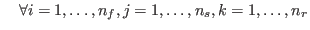
. Here,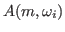
is a discretization of the governing PDE for a discrete model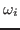
, for example, frequency. Further,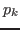
represent receivers,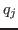
the applied sources, and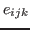
is assumed to identically distributed white noise. It is important to note that computing the data requires the computation of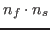
fields associated with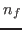
different linear systems and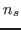
right hand sides.In practical applications, the number of sources and frequencies is generally large, and so a large number of PDE solves is required in the inversion. Thus, efficient methods for solving the PDEs are essential. In jInv, one can chose between state-of-the-art iterative or direct methods depending on the problem size and computational resources. Also, jInv supports both regular and stretched tensor meshes that can be adapted to the source locations.
For given data, sources, receivers, and frequencies, the goal of the
parameter estimation problem is to estimate the model  . Therefore, we
consider the bound-constrained discrete optimization problem
. Therefore, we
consider the bound-constrained discrete optimization problem
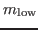
and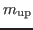
are lower- and upper bounds on the components of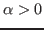
balances between the misfit and regularizer. In its current version jInv provides some commonly used misfit functions (weighted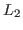
andThe optimization problem is solved using a projected Gauss-Newton method that uses a Steepest Descent step to identify the active set. The Hessian approximation of the data term is implemented in a matrix-free fashion, since it involves
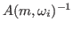
for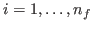
, which are in general large and dense. Intermediate results of the PDE solver such as a factorizations or preconditioner are re-used to accelerate computations with the Hessian. A projected PCG method is used for determining the search direction and projected Armijo condition is used for line search.A particular focus of the talk is Julia's potential for parallel and distributed computing that is used in jInv to reflect the parallel structure of the misfit term in (2). Note that all terms can be computed independently and in parallel. Therefore a variety of parallelization strategies are supported by jInv that can be tested to exploit the given computational resources.
We use a distributed data model that divides the data, sources, receivers
and frequencies among all available workers and therefore parallelizes
evaluation of the misfit. One benefit is the reduced memory consumption,
in particular regarding the fields and intermediate results from the PDE
solves that are held in memory by the respective worker. Another benefit
of this model is the reduction of communication costs, since only the
model  as well as vectors of equivalent size must be communicated.
as well as vectors of equivalent size must be communicated.
The talk will present numerical examples geophysical imaging. Particular emphasis is on the parallel implementation using Julia. We will show the scalability of the code on a single-user laptop, a large parallel workstation, and a cloud computing engine.